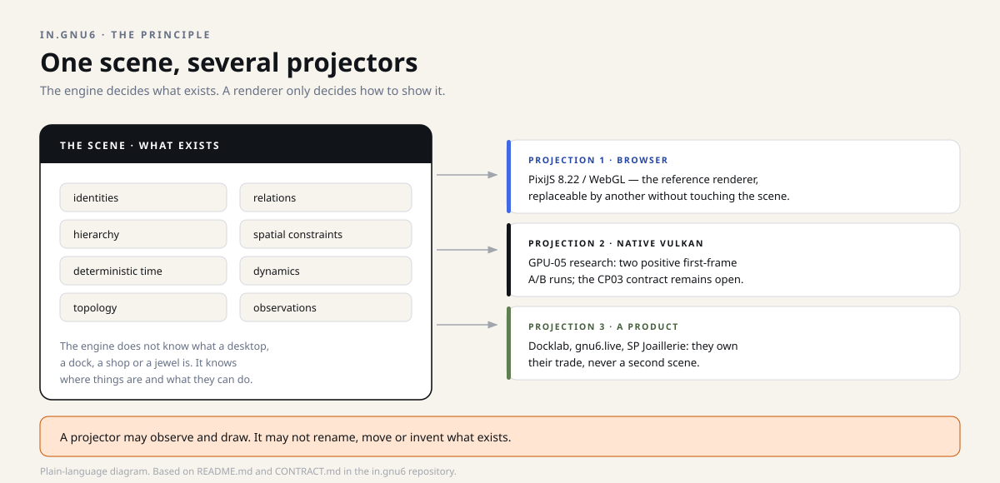
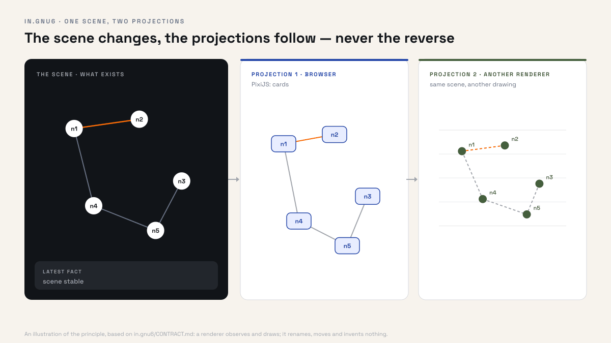
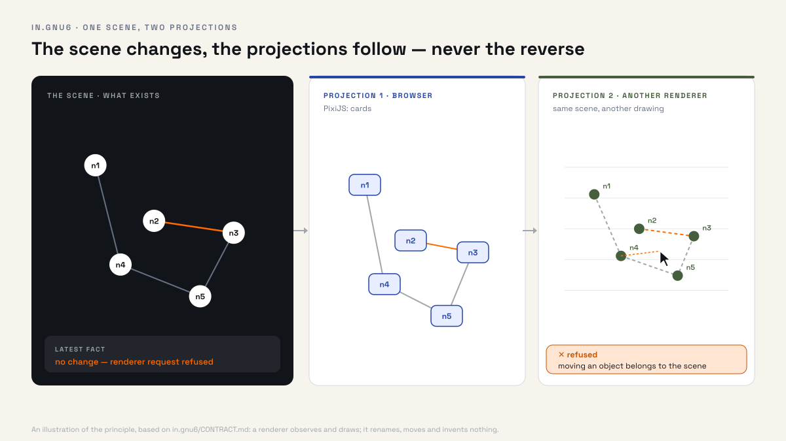
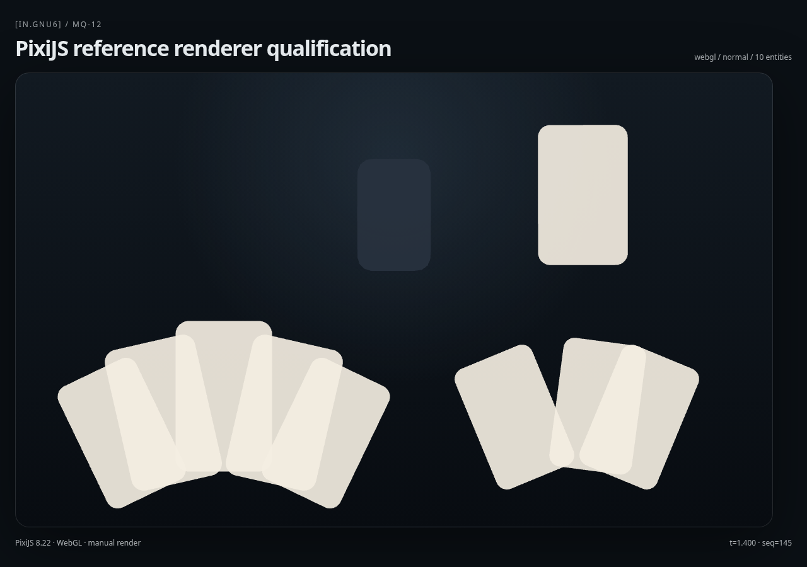
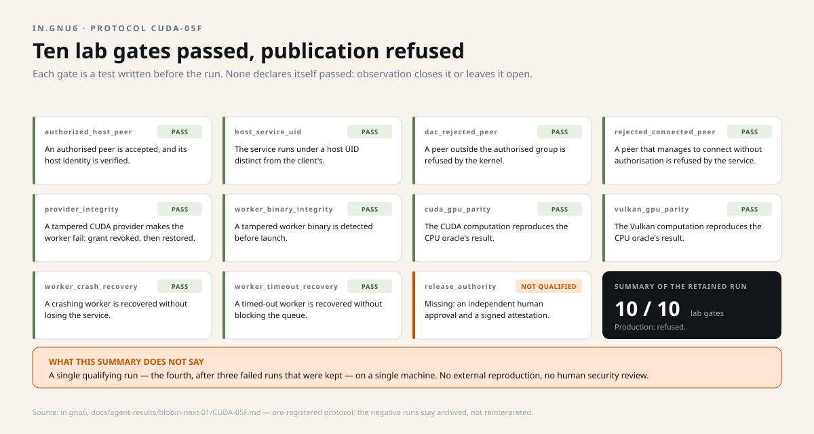

Snapshot of October 29, 2026. This dossier describes the four repositories as they stood that day; the projects have moved on since, and the repositories are the authority. Underlined links lead to the sources, frozen at their state of that day.
Dossier 4 · the scene
in.gnu6
An engine that decides what exists in a scene — positions, relations, time, constraints — and lets each display decide only how to show it.
Research 2026.10.0-research No OSS licence
On this page
- In one picture
- The principle
- What the engine owns — and what it ignores
- Two products to try to break the engine
- Three surfaces, three levels of truth
- The figures, and what they do not prove
- What the licence does not say
- Why it is a programme of evidence
- History: a quest log, not a task list
- Projections: from research to product
- What it changes, depending on who you are
- Going further
In one picture #
Think of a theatre. The stage knows where the actors, the sets and the passages are: it decides what exists and what is possible. The projectors light that stage with their own technique — one projects an image, another lights it at a grazing angle.
Changing projectors does not move the actors. That is the whole separation in.gnu6 stands for: the rendering is replaceable; the scene is not.
The principle #

Most graphics engines mix two questions: "what exists?" and "how do we draw it?". The mix holds until the day you want to change rendering engines, export a scene, or run two products on the same model — and then everything has to be rewritten.
in.gnu6 separates the two. A TypeScript core maintains the scene: identities, relations, hierarchy, spatial constraints, deterministic time, dynamics, topology, deformations, queries and reproducible observations. The renderers — a browser with PixiJS, a native Vulkan engine, or a consuming product — only project that state.


CONTRACT.md.What the engine owns — and what it ignores #
It owns
- the identity of a scene and of its objects;
- the relations and hierarchy between them;
- spatial and admissibility constraints;
- deterministic time and dynamics;
- topology and its changes;
- reproducible observations.
It ignores
- what a desktop, a dock or a workspace is;
- what a product, a shop or a basket is;
- what a piece of jewellery or a business action is;
- which commercial intent justifies a screen.
Those meanings belong to the products that consume the engine — not to the engine.
Two products to try to break the engine #
Docklab, a dock of nested cards, and a harness for a jewellery shop, a fan of tarot cards: two trades with nothing in common. They must run on the same core, without either one forking its laws.
This is milestone MQ-10. The two products share a single test scene, with one clock, one space and one topology registry. They are allowed only adapters and configuration: no product name, no special branch in the engine's code.
The run also found a fault: a hard-coded assumption about the direction in which a card lifts. It was repaired, and putting it back makes an end-to-end test fail; once fixed, the core passes 96 tests across 24 files.
Docklab
A frame attached to the screen edge, nested cards, a neighbour field, reordering, and an edge that changes along the way.
The jewellery-shop harness
A fan centred in the view, measurements that adapt to the screen, a play zone, drag and drop, and the behaviour of tarot cards.
Three surfaces, three levels of truth #
| Surface | What it is | Evidence currently admissible |
|---|---|---|
| TypeScript core | The display-free model: scene, topology, space, time, interaction | 16 ratified milestones; full gate at 29 files / 119 tests, Pixi build and 2 browser tests |
| PixiJS / WebGL | The reference projection in a browser, replaceable | Qualified by milestones MQ-11 (contract) and MQ-12 (browser) |
| Native Vulkan | Research into fast native rendering, outside the browser | Partial local evidence; the overall acceptance contract CP03 remains open |

docs/evidence/assets/.The figures, and what they do not prove #
Two observations recur in the repository's documents, and they are interesting precisely because they are bounded.
Endurance: 9,370 frames presented in 124.994 seconds, without a single discarded frame — about 75 frames per second on average, with a p95 of 13.478 ms. Measured locally, through the Wayland compositor's presentation timestamps.
Real exchange: a Rust program and the TypeScript semantic projector exchanged 40 real Wayland events over a private Unix socket, with an exact sequence match and 1,497 frames presented in 20 seconds, without loss.
125 seconds, frame by frame
9,370 frames presented by the compositor, none discarded. 9,368 intervals fall between 12.9 and 14 ms, around the screen period (13.34 ms). The only one above 20 ms is the very first, at start-up: 26.65 ms.
- A single configuration. These measurements come from one NVIDIA reference machine. They guarantee nothing on another card, or on several.
- No input-to-photon. The delay between a click and the displayed pixel is not measured; the runs that came close did not observe a real click.
- An unexplained anomaly. An earlier run showed a 413 ms stall that was never explained. It stays on the record.
- CP03 remains open. The overall acceptance contract — sixty frames per second sustained, independent latency, audit — is not closed.
What the licence does not say #
The repository has been public since October 10, 2026, but its licence has not been decided. The package file explicitly declares "UNLICENSED". A visible repository therefore does not grant a general right to copy or modify the code.
Two deliberate absences come on top: no stable public API, and nothing published on npm. Today the engine is to be assessed as a documented research programme, not as a dependency you install.
Why it is a programme of evidence #
The repository does not present a list of features: it presents a list of milestones to ratify. Each must rest on a law, a falsification test, an execution observation — or remain explicitly open. A milestone can be rejected by a failing test, and the rejection stays written down.
A side experiment in the repository shows the method at work. A Rust supervisor hands a graphics computation to a separate process, under a distinct system account, and eleven gates are written before the run. Three acquisitions failed; they are kept. The fourth passes the ten lab gates — and the eleventh, the authorisation to publish, remains refused for lack of an independent human review.

The two consuming products presented above play their part here: if either needed a second scene, the separation would be wrong.
This discipline explains the figures at the top of the page: 16 ratified milestones do not mean "ready", and 9,370 frames without loss do not mean "smooth for you". Every number carries its frame.
History: a quest log, not a task list #
The repository does not keep a task list: it keeps a quest log. The main questline defines what "complete" means; side quests keep what was learned along the way.
A quest has fifteen possible states, from UNKNOWN to CLOSED, and they do not form a ladder: "green locally" does not imply "observed", and "observed" does not imply "ratified". Side quests may be urgent or valuable; that does not make them mandatory. Their priority belongs to the human operator, and the log says so in plain words.
Projections: from research to product #
in.gnu6 is a programme of evidence. To become a dependency you install, it needs an accepted native renderer, a licence, a stable API and a publication — four things it does not claim today.
What would close CP03
The native renderer's acceptance contract lists what is missing: independent measurements of the delay between an input and the displayed frame, an external technical auditor, and a test of the supervised production ingress. Endurance passes; the whole does not.
Licence and publication
The repository has been public since October 10, but declared "UNLICENSED": no licence decided, no stable API, nothing published on npm. These are separate gates, and none is dated.
What it changes, depending on who you are #
Curious
You understand why an application can change its look without changing its content — and why "redoing the rendering" does not mean redoing the model.
Developer
A tested TypeScript core, a written renderer contract, a reference browser renderer, and a Vulkan experiment documented with its failures. Much of it can be checked without a graphics card.
Decision-maker or funder
The question is an industrial one: what does it cost on the day you must change rendering engines or plug in a second product? The answer here is an architecture, not a promise.
Going further #
Technical — the repository's words
Scene: the set of objects, relations, positions and constraints the engine holds to be true. Projection: the translation of that scene into pixels, done by a renderer. Renderer: the program that draws — browser, Vulkan, or any other to come. Topology: the map of places and links, including when it changes. wp_presentation: the Wayland mechanism that tells when a frame was actually presented on screen.
Languages: TypeScript for the core and the reference renderer; Rust for the native experiment. Status: research, without an OSS licence or a stable API.
Reproducing without amplifying authority
The core is checked with Node.js 24 or later: npm ci, then type checks, law tests and the browser walkthrough. These commands cover three different things — and none of them amounts to a graphics qualification.
Heavy GPU experiments go through a dedicated runner, with resource limits and documented refusals. The repository explicitly asks not to run a Vulkan or CUDA benchmark by bypassing that control.